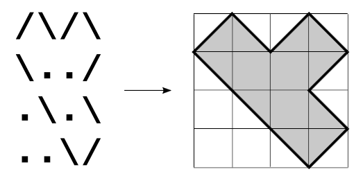

Mùa hè sắp đến, Tí quyết định sẽ xây một hồ bơi trong sân nhà của mình để thư giản vào những ngày hè nắng nóng. Cậu ta tự thiết kế cho mình một bản vẽ hồ bơi bằng file word. Sân vườn của cậu ta có hình chữ nhật kích thước M*N, mỗi ô được đánh dấu là '/' hoặc '\' tương ứng với hai hướng xoay của bờ hồ và '.' để đánh dấu ô đất đó trống (không bị đào để làm thành hồ.
Ví dụ như hình bên dưới là sơ đồ thiết kế và hình ảnh thực tế của một chiếc hồ mà Tí đã vẽ.

Tuy nhiên, Tí lại không thể tính được diện tích của hồ bơi mà cậu ta vừa thiết kế và cậu ta đành phải nhờ bạn giúp việc này. Với một số đồ của hồ bơi cho trước, bạn hãy giúp Tí tính diện tích của hồ bơi đó.
Dữ liệu luôn đảm bảo trong bản vẽ chỉ tồn tại một hồ bơi duy nhất.
Dữ liệu nhập: Dòng đầu tiên chứa 2 số nguyên dương M, N là kích thước của hồ (M, N ≤ 100). M dòng tiếp theo, mỗi dòng chứa N kí tự là một trong 3 kí hiệu ở trên, thể hiện trạng thái tại ô đất tương ứng.
Dữ liệu xuất: Diện tích của hồ bơi mà Tí vừa thiết kế.